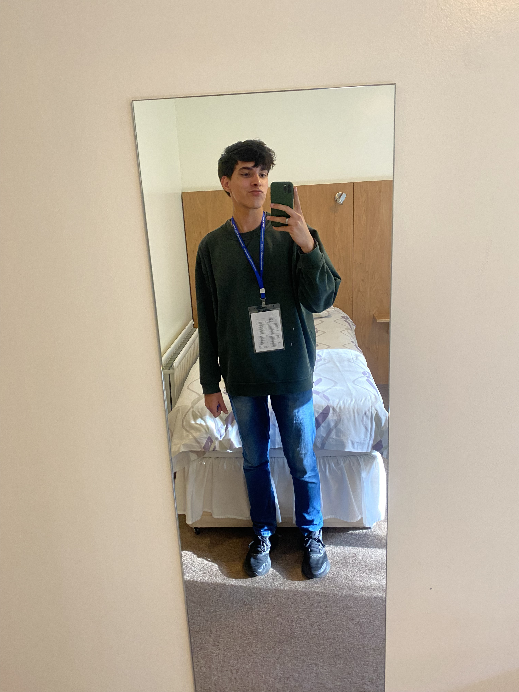

David Yadav
Profile Summary:
Highly skilled and adaptable, with strong communication skills, both
written and verbal. Effective team player with excellent problem-solving
abilities and attention to detail. Proficient in Python, C/C++, HTML,
and CSS, with a basic understanding of JavaScript and some experience in
Web Design. Experienced in customer service, cash management, drink
preparation, cleaning and sanitation, team coordination, and adhering to
policies and procedures. Proactive and eager to learn, with a focus on
customer satisfaction and team collaboration.
Education:
Don Bosco Higher Secondary School, Goa, India - A-level Equivalent
June 2020 - May 2022,
-
Completed A-level Qualifications in English(A), French(D),
Computer Science(B), Mathematics(D), Physics(C) and Chemistry(C)
Work Experience
The Table (A Community-based, Specialist Coffee Shop), Walsall — Volunteer/Barista
September 2022 - PRESENT
Job Responsibilities:
- Customer service
- Drink preparation
- Cleaning and sanitation
- Team coordination
- Adhering to policies and procedures
Daffodils Community Garden and Allotments, Walsall - Volunteer
October 2022 - PRESENT
Job Responsibilities:
- Sole developer and manager of upcoming website
Skills:
- Strong communication skills, both written and verbal
- Ability to work effectively in a team-oriented environment
- Excellent relationship-building skills with the ability to collaborate effectively
- Excellent problem-solving skills and attention to detail
- Eager to learn and quickly able to adapt
- Customer service and client relationship management
- Good understanding of Python, C/C++, HTML and CSS; with a basic
understanding of JavaScript & some experience in Web Design
- Extensive experience in using Microsoft Office - Word, Excel and
PowerPoint for producing reports and projects at school
Extracurricular Activities
- Volunteer work in Community-based projects
- Represented my school at the state level and represented my state at a national level in basketball
- Involved in School Science Club
- Participated in multiple debate and general knowledge competitions as well as singing and acting competitions
- Some of my hobbies include sketching, cooking , photography and outdoor activities